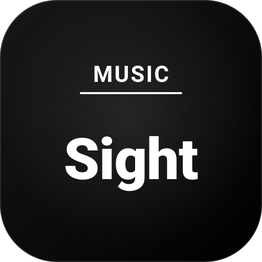

Весь твой музыкальный мир в одном приложении. Подборки по вкусу, любимые стриминговые сервисы и безупречный интерфейс.
Поддерживаемые источники музыки
Умная персонализированная подборка треков по вкусу, которая подстраивается под ваше настроение и привычки прослушивания в реальном времени.
Управляйте музыкой из Яндекс Музыки, ВК Музыки, YouTube Music и SoundCloud в одном лаконичном и быстром интерфейсе.
Создавайте плейлисты, переименовывайте их, удаляйте отдельные треки и добавляйте музыку в один клик прямо из плеера или рекомендаций.
Нативное приложение для Windows, Android и Arch Linux с быстрым стримингом и кэшированием метаданных обложек и альбомов.